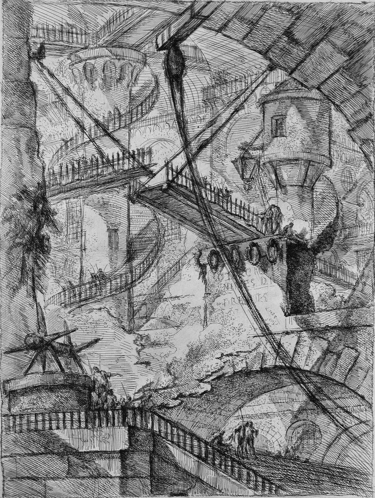
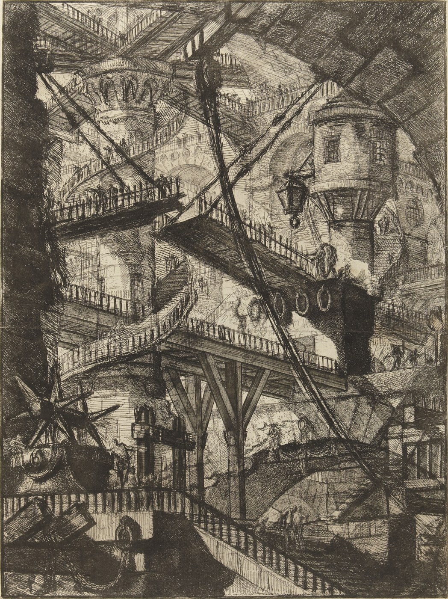

after Giovanni Battista Piranesi’s Carceri d’invenzione, Rome, about 1750 and 1761
Giovanni Battista Piranesi (Venice 1720 – Rome 1778) trained as an architect and learned stage design, then spent his life drawing and measuring the ruins of Rome and selling his etched Views of the city. About 1750 he published fourteen Carceri, prisons “of invention”: enormous vaults of stairs, bridges, ropes and machines that nobody ever built. About 1761, the year he moved his house, workshop and shop to the Palazzo Tomati in the Strada Felice, he took the copper plates up again, added two new ones and bit every one deeper: more bridges, more chains, stronger blacks. You have just done that to plate VII.
Look again at the picture: the people are tiny, which is what makes the stone so vast. And try to follow one stair from the bottom to the top with your finger. In the reworked plates some of the stairs and bridges do not join up as real ones must.
From the sources: both states of plate VII and what he added between them (the timber bridge on its trestles, the far galleries and the deeper shadow are only in the 1761 picture); the vault with the great pier, plate XVI, and the words on its column, AD TERROREM INCRESCEN[TIS] AVDACIAE, which he took from the Roman historian Livy; his saying “col sporcar si trova”, by messing about one discovers; the gold zecchino, a coin of papal Rome.
The game’s own: you and your three drawings; the copper plates on the floor; the ruins in the first scene, which are the kinds of thing he etched in his Views of Rome arranged as no real place; which pieces you add (in the real plate the stone arch and the winding stair were there already in 1750); the route, the capstan, the rolling stones, the swinging hooks, the missing planks and the lantern that lights.
Pictures: Giovanni Battista Piranesi (died 1778), public domain, from Wikimedia Commons: Carceri plate VII in its first state (scan: Leiden University) and second state (Princeton University Art Museum), and plate XVI in its second state (Princeton University Art Museum). The etched look of the game is made by the game.